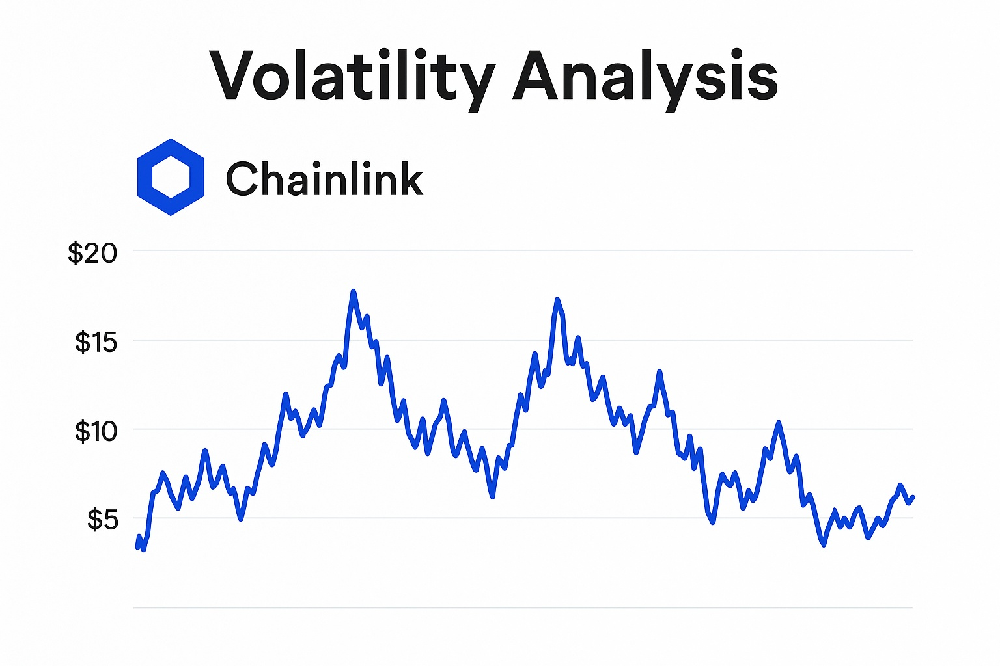

Chainlink Price Forecast for End of 2025: Analysis and Insights
This content is intended for educational purposes only and does not constitute investment advice. Investing in cryptocurrencies involves significant risk.
Introduction
As of August 20, 2025, 01:00 AM EEST, Chainlink (LINK) trades near $18.50, reaffirming its role as the top decentralized oracle network. Created by SmartContract, Chainlink allows smart contracts on blockchains like Ethereum to securely access real-world data, APIs, and payment systems. Its importance for DeFi, NFTs, and cross-chain communication makes it a vital element of the Web3 ecosystem. In this article, we provide a detailed outlook for LINK’s price by the end of 2025, considering optimistic and pessimistic scenarios, major growth drivers, and potential risks based on market and ecosystem developments.

Current Situation
On August 20, 2025, Chainlink’s price stands around $18.50 — up 30% since June 2025 when it was $14.20. Over the last month, LINK demonstrated resilience with 60% of sessions closing positive and moderate volatility at 5.2%. The Fear and Greed Index at 74 points to strong market confidence, supported by DeFi growth, new blockchain partnerships, and the expansion of Chainlink’s Cross-Chain Interoperability Protocol (CCIP). Over the past year, LINK advanced from $10.80, achieving 71% growth. Since its 2020 value of $4.50, it has gained 311%, driven by its expanding oracle network and vital role in powering smart contracts.
Price Predictions for End of 2025
Forecasts for Chainlink’s price by December 2025 vary with market trends. In a bearish case, LINK may fall to $12.00 if the expected 30–50% correction happens in early 2025. Moderate scenarios suggest stability between $20.00 and $24.00, supported by DeFi integration and cross-chain applications. Bullish estimates see LINK reaching $28.00–$35.00, especially if markets rebound in Q1 2025. Some analysts expect LINK to touch $25.00 by October 2025, fueled by rising demand for decentralized oracles and growing CCIP adoption.
Factors Driving Price Growth
- DeFi Integration: Chainlink remains the leading oracle provider for DeFi, boosting LINK token demand.
- Cross-Chain Connectivity: CCIP strengthens blockchain interoperability, expanding LINK’s utility.
- Enterprise Collaborations: Partnerships with major blockchains and companies such as Ethereum, Polygon, and Avalanche drive broader adoption.
- Market Rally: A potential crypto uptrend in early 2025 could create favorable conditions for LINK’s growth.
- Network Growth: Increasing nodes and data feeds enhance the strength and decentralization of Chainlink’s ecosystem.
Risks and Downward Factors
- Market Instability: A 30–50% correction in early 2025 could pressure LINK’s price and investor confidence.
- Regulatory Challenges: Stricter global rules on crypto and DeFi could hinder Chainlink’s accessibility.
- Rising Competition: New oracle projects may challenge Chainlink’s dominance with alternative solutions.
Volatility Analysis
Between July and August 2025, LINK climbed from $14.20 to $18.50, marking a 30% rise with volatility at 5.2% — showing more stability than in previous cycles. Annual growth of 71% underscores its momentum. Technical signals, such as bullish alignment in the 50-day and 200-day EMAs, point to continued strength. If a market recovery emerges in early 2025, LINK could benefit from its role in DeFi and cross-chain connectivity. Its expanding network and partnerships further reinforce long-term adoption and potential value growth.
Conclusion
By late 2025, LINK is expected to trade within $20.00–$28.00, with bullish targets as high as $35.00. Key factors include DeFi adoption, cross-chain innovation, and enterprise collaboration. Nonetheless, risks such as volatility, regulation, and rival oracle solutions must be considered. Investors should conduct thorough research and apply sound risk management before investing in Chainlink.